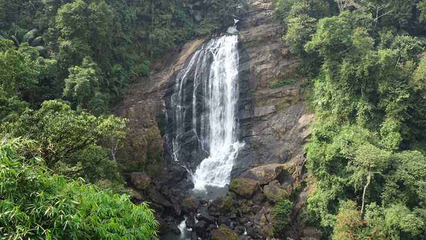

MAIN ATTRACTIONS
Hill view Park
With spectacular views of the Cheruthoni and Idukki Dams, the Hill-view Park serves as a famous tourist destination of Idukki. One can also spot diverse wildlife in its belt natural habitat.


Kulamavu dam
If you're a hiking or trekking junkie, Kulamavu is a hill-station that offers the perfect terrain for an adrenaline kick. With some amazing trekking trails, the place is also adorned with equally enchanting surroundings.
Ayyappancoil hanging bridge
A bridge that is one of a kind and attracts numerous tourists on a daily basis, the Ayyapancoil Hanging Bridge is one of the longest hanging bridges in Kerala. The region surrounding the bridge is so captivating and pleasant that it makes this place a perfect getaway spot for a weekend or an unplanned holiday. The hanging bridge is very stimulating to watch and exciting to take a stroll on. An engineering wonder which also happens to be the least explored place


Ramakkalmedu
An exquisite hill station situated in the Idukki District on the Kerala-Tamil Nadu state border and home to a number of attractions Ramakkalmedu is a must-visit attraction. Its name can be broken down into three words namely Ram, Kal, and Medu referring to Lord Rama, rock, and land. According to legend, this place was visited by Lord Rama while he was searching for his wife Sita who was kidnapped by Ravana
Valara waterfalls
Situated between Adimali and Neriamangalam, Valara Waterfalls is one of the most enchanting and amazing tourist spots in this region. Valara which comprises of a chain of waterfalls surrounding by lush green forests which are home to a variety of animals and birds is situated 42 km away from Munnar.
